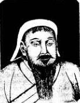

 |
Тэмуджин (1167≈1227), получивший на курултае в 1206 году титул Чингисхана. Репродукция с картины в резиденции принца Кэ Ла Шена, потомка Чингис-хана. |
Эренжен Хара-Даван (1883≈1942)
"Чингисхан как полководец и его наследие"
 Чингис-хан - неожиданный ракурс.
Предисловие Гумилева Л.Н. и В.Ю. Ермолаева
к публикации книги в Казахстане в 1990 г.
Чингис-хан - неожиданный ракурс.
Предисловие Гумилева Л.Н. и В.Ю. Ермолаева
к публикации книги в Казахстане в 1990 г. - Предисловие,
Вступление, Источники

 Часть первая
Часть первая - I. Краткие
сведения о монголах
- II. Темучин
- III. Женитьба
Темучина и его мировоззрение
- IV. Темучин
провозглашается Чингис-ханом группой
аристократии
- V. Объединение
отдельных племен в один монгольский народ
- VI. Торжественное
провозглашение Чингис-хана императором.
Организация его империи
- VII. Военное
устройство монгольской империи (1 пол.,
2 пол.)
- VIII. Поход
на Китай
- IX. Поход
в Средную Азию
- X. Второй
поход на Тангут и смерть Чингис-хана
- Приложение
к первой части
- Часть вторая
- XI. Поход
монголов на Европу
- XII. Болгария
и Сербия как вассалы
- XIII. Влияние
монгольского ига на Россию
- Приложение
ко второй части
{kind=link}
Подготовка электронного текста книги
завершена в ноябре 1998 года,
предисловие Л.Н. Гумилева и В.Ю. Ермолаева
добавлено в 2000 году.
Другие работы
- Евразийство с точки зрения монгола (18/11/08)
- Опубликовано // Евразийство с точки зрения монгола / Евразийская хроника. Вып.Х. Париж, 1928.